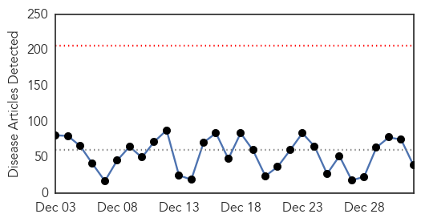

Influenza
30-Day Web Trend
2 alerts, 0 warnings

30-Day Twitter Trend
2 alerts, 0 warnings

Article Locations

Article Confidences

Top Articles:
- 1.000
- Flu hits epidemic threshold
- 0.999
- Flu Kills Child in Northern Kentucky
- 0.998
- Medical officials in North Platte area see daily flu cases
- 0.998
- Coeur d'Alene Press: Local News
- 0.997
- Indiana health officials tout flu shots amid outbreak
- 0.997
- CDC Recommends Flu Shots as Cases Reach Epidemic Levels
- 0.995
- Health officials tout flu shots amid outbreak
- 0.995
- VIDEO: Flu is now epidemic, but it's not too late to get vaccinated
- 0.994
- Sask. flu season ‘typical’ so far - Regina
- 0.993
- CDC: Flu Has Hit Epidemic Threshold in U.S.
- 0.991
- Flu now considered widespread across Tennessee
- 0.987
- Spike in flu cases across Oklahoma; best tips to avoid the flu
- 0.985
- Flu force spurs changes in hospital visit policies
- 0.985
- Flu season hitting fast, hard
- 0.985
- Why Doctors Don't Want Flu Patients in Their Office
- 0.984
- ' Flu Now Widespread In 36 States
- 0.976
- Flu tightens grip on Minnesota, where 3 children have died
- 0.974
- Rough flu season and tight Tamiflu supply: Pharmacist suggests ways to cope
- 0.965
- Blount Co. family fights flu on New Year's Eve
- 0.807
- Flu Remains Widespread in Minnesota, U.S.
- 0.806
- Hong Kong Kills 15,000 Chickens and Suspends All Live Poultry Imports
- 0.678
- Alliance Community Hospital offers help against flu bug - SalemNews.net
- 0.517
- Poultry samples test negative
Top Tweets:
- 0.767
- RT: Some good news about the flu vaccine (finally!). Influenza vaccinations may provide cross-protection against... http://t.…
Unknown
30-Day Web Trend
0 alerts, 0 warnings

30-Day Twitter Trend
0 alerts, 0 warnings

Article Locations

Article Confidences

Top Articles:
- 0.991
- Valley pediatricians see spike in flu cases
- 0.989
- Doctors caution that flu season likely hasn't peaked
- 0.984
- Flu epidemic declared, how does it affect Tri-States?
- 0.977
- ACH offers advice on avoiding the flu
- 0.958
- Hawaii: Porcine Epidemic Diarrhea virus found on additional pig farms
- 0.952
- Ind. health officials tout flu shots amid outbreak
- 0.950
- Calls for more flu jabs after record annual number of cases in South Australia
- 0.926
- Hong Kong culls 19,000 birds amid avian flu alert
- 0.917
- Chicago Tribune
- 0.917
- Chicago Tribune
- 0.917
- Chicago Tribune
- 0.917
- Chicago Tribune
- 0.917
- Chicago Tribune
- 0.917
- Chicago Tribune
- 0.917
- Chicago Tribune
- 0.880
- Ind. health officials tout flu shots amid outbreak
- 0.880
- CDC: Flu “widespread” in Indiana as Tamiflu runs thin
- 0.866
- Medical issue forces Qatar Airways flight to make unscheduled UK landing
- 0.863
- Flu cases skyrocket; Second round of another strain may be on way
- 0.861
- Ind. health officials tout flu shots amid outbreak
- 0.814
- Hospital Takes Precaution to Prevent Spread of Flu
- 0.808
- West Texas News
- 0.759
- Catawba honors students spend fall semester studying infectious diseases
- 0.728
- WV MetroNews – Parkersburg hospital announces restrictions for visitors because of flu
- 0.683
- News, Weather, Sports, Breaking News
- 0.662
- Mass TB skin tests set
- 0.629
- UPDATE: Bayhealth Revises Visitation Policy Following Flu Outbreak
- 0.615
- Major outbreak of vesicular stomatitis officially over
- 0.585
- Former New York Governor Mario Cuomo dies aged 82
- 0.585
- Video: Cubans set sights abroad after thaw with US
- 0.585
- Syria and Iraq suffer record death tolls in 2014
- 0.585
- North Korean leader proposes talks with South
- 0.585
- Egyptian court orders retrial of jailed Jazeera journalists
- 0.585
- Italy mounts rescue for 450 migrants abandoned off coast
- 0.585
- Brazil’s Rousseff vows to tackle corruption in second term
- 0.585
- Bad weather hampers AirAsia search as first victim buried
- 0.568
- Mental health patient admissions to A&E set to reach record levels
- 0.539
- Aiken Regional among state’s penalized hospitals
- 0.523
- Fox 28: South Bend, Elkhart IN News, Weather, Sports
Top Tweets:
- 0.685
- RT: Buenos días, me despertó el grito de gol de pero como no gritar; empezar el año con GOL de en…